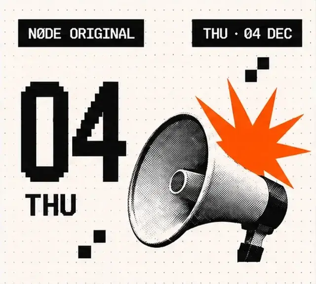
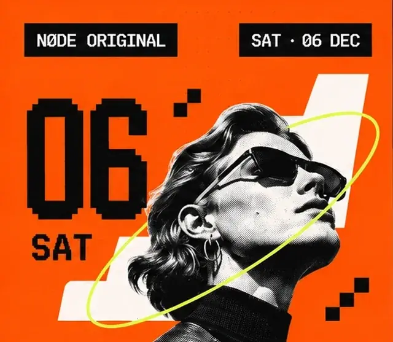
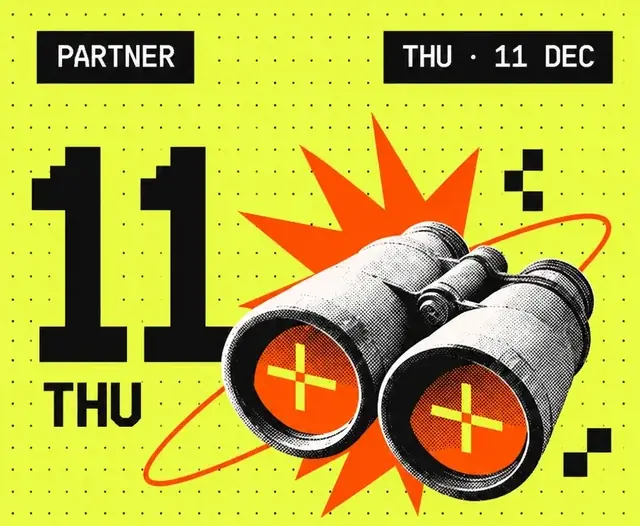
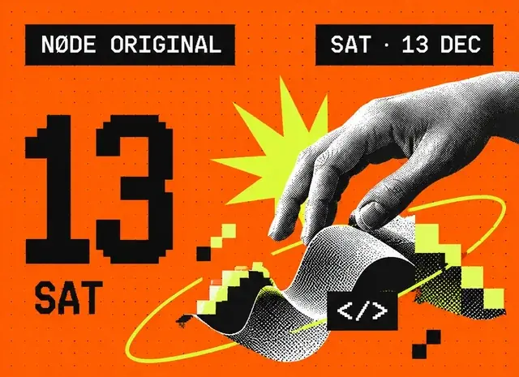

WhereCreativeMindsConnect.
Talks, workshops and meetups for UI/UX, product and digital designers. See who's going before you arrive.
[ 02 ]The next big idea starts here. Curated design events, online and in person, for UI/UX and product design. Meet your people.
[ 02 ]
Featured events
Editor’s picks: the headline events of the season, hand-picked by the NØDE team.
View all events

[ 03 ]Coming up
Coming upon NØDE
Nearest first: everything happening in the next two weeks, sorted by date.
01 / 06
 NØDE Original.Accessibility Audit ClinicA hands-on session to review and improve the accessibility of real interfaces.OnlineFree18:00Wed, 03 Dec · Your local time
NØDE Original.Accessibility Audit ClinicA hands-on session to review and improve the accessibility of real interfaces.OnlineFree18:00Wed, 03 Dec · Your local time
NØDE Original.Portfolio Review EveningGet feedback on your portfolio from experienced designers and product leads.OnlineFree20:00Thu, 04 Dec · Your local time
NØDE Original.Design Trends 2026Key trends, tools, and real-world examples shaping design in 2026.TalkBerlin€40Sat, 06 Dec · 11:00 Berlin time NØDE Original.Interaction Design CritA live critique session to improve interaction design and user flows.MeetupOnlineFreeTue, 09 Dec · 19:30 Your local time
NØDE Original.Interaction Design CritA live critique session to improve interaction design and user flows.MeetupOnlineFreeTue, 09 Dec · 19:30 Your local time
Partner.Product Discovery SprintA practical workshop to turn problems into clear product opportunities.WorkshopLondon€60Thu, 11 Dec · 09:30 London time
NØDE Original.Creative Coding for DesignersExplore how code can extend your design practice and creative ideas.WorkshopLisbonFreeSat, 13 Dec · 11:00 Lisbon time- All events
[ 04 ]
Find your corner of design.
Each discipline opens the catalogue with that topic already filtered.
[ 05 ]
Discover.
Attend.
Connect.
01 · Discover
Curated, not crowded
Every event is checked for relevance, a credible organiser and clear terms before it appears.
02 · Attend
Online and in person
Times in your time zone. No account needed to browse or to register for NØDE events.
03 · Connect
Know who is in the room
See which disciplines are attending. Show your own profile only if you choose to.
Hosting
a design
event?
Share it with the NØDE community.
- Design-focused — for the UI/UX, product and digital design crowd
- A trusted organiser — with a clear identity and track record
- All key details upfront — format, terms, price and registration
- Real value for designers — practical insights, quality content and meaningful connections